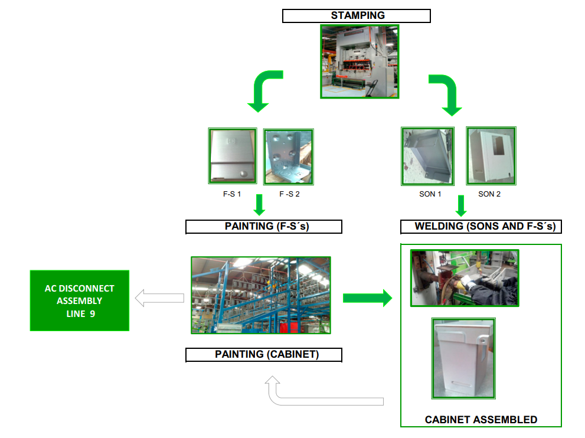
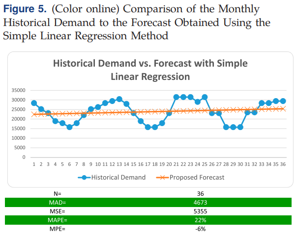
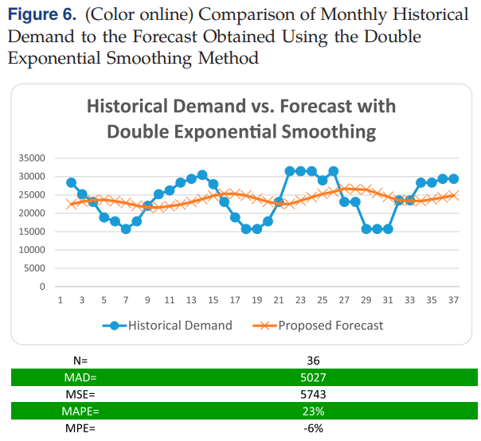
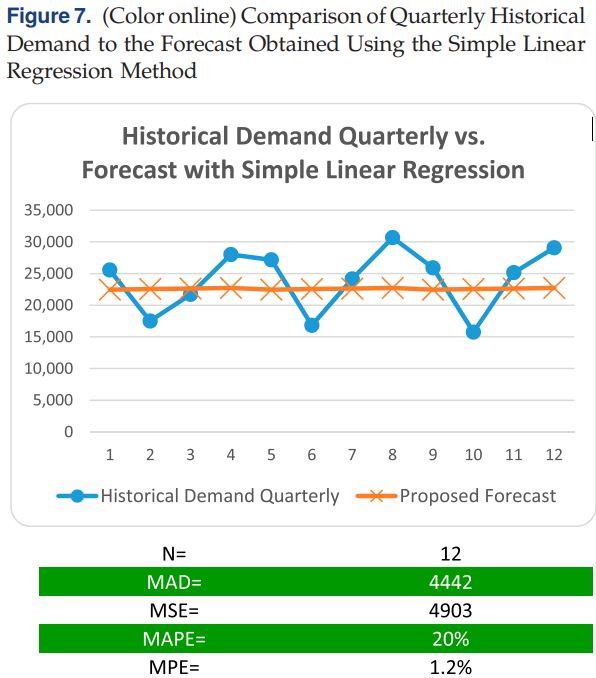
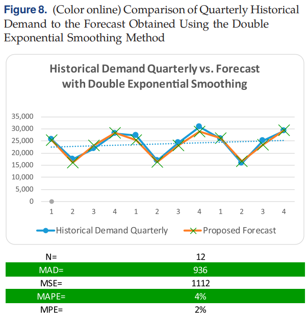

세계에서 가장 앞선 공급망
— 슈나이더 일렉트릭 분석
3년 연속 가트너 Supply Chain Top 25 세계 1위, 그 운영의 안쪽
목차 (Table of Contents)
왜 슈나이더인가?
어떻게 작동하는가?
우리는 무엇을 배우는가?
가트너 Top 25 1위 선정 사유
세계 최대 기업들의 경쟁
가트너의 Supply Chain Top 25는 2004년 시작, 2025년으로 21회째. Fortune Global 500과 Forbes Global 2000에서 연매출 약 150억 달러 이상 기업 300여 개를 대상으로 평가합니다.
- 평판 50%: 동료 기업 임원 투표 + 가트너 전문가 투표
- 실적 50%: ROPA, 매출 성장, 재고회전, ESG 성과
- ESG 단독 20%: 환경·사회 성과 없이는 1위 불가
사실상 "현역 최고"
Amazon·Apple·P&G·Unilever처럼 10년 중 7년 이상 상위 5위에 든 기업은 'Masters' 명단으로 따로 분리됩니다. 따라서 슈나이더의 1위는 활동 중인 기업 가운데 최고를 의미합니다.
Siemens
BMW
AstraZeneca 등
IT·제약·소비재
ROPA는 자산이 가벼울수록 유리. 약 160개 공장을 짊어진 슈나이더가 IT 기업들을 제친 의미.
종합점수 산식과 평가 구조
2025년 종합점수 산식
* ROPA = Return on Physical Assets, 물적자산수익률
가트너는 2025년 상위 기업의 공통점으로 AI 도입, 자동화, 자원 절약 운영을 꼽았습니다. 슈나이더에 대해서는 현장 직원이 직접 AI 활용처를 찾아 제안하는 문화를 높이 평가했습니다.
2025년 Top 3 — 3년 연속 1위
효율·회복력·지속가능성의 동시 달성
- 슈나이더 일렉트릭 5.81: 2023년 첫 1위 이후 3년 연속 정상
- NVIDIA 5.66: AI 칩 선두지만 슈나이더에 밀림
- Cisco 5.08: 네트워크 장비 강자
보고서의 핵심 질문
어떻게 효율·회복력·지속가능성을
동시에 해냈는가?
슈나이더 일렉트릭 — 기업 소개
190년 역사의 에너지 기술 기업
1836년 프랑스 르 크뢰조(Le Creusot)에서 철강 주조소로 출발해, 오늘날 전기화·자동화·디지털화를 잇는 글로벌 에너지 기술 리더가 된 기업. 본사는 프랑스 Rueil-Malmaison, CAC 40 상장사입니다.
| 설립 | 1836년 (Adolphe & Joseph-Eugène Schneider 형제) |
| 본사 | 프랑스 Rueil-Malmaison |
| CEO | Olivier Blum (2024.11~) |
| 상장 | Euronext Paris · CAC 40 |
| 주요 브랜드 | Square D · APC · AVEVA · ETAP |
| 사업 영역 | Energy Management · Industrial Automation |
철강에서 에너지 기술까지
기업과 시장 환경
에너지 기술 파트너
슈나이더는 단순 전기장비 제조사가 아닙니다. 데이터센터·공장·빌딩·전력망이 에너지를 더 똑똑하게 쓰도록 돕는 에너지 기술 파트너입니다.
- New Energy Landscape: 전기차·재생에너지·스마트빌딩 확산
- Digitalization & AI: 데이터센터 수요 폭발 → 전력·냉각 수요 견인
- Multi-Polar World: 지정학 갈등, 관세 → 지역화 공급 필요
NVIDIA가 AI의 두뇌라면, 슈나이더는 그 두뇌가 꺼지지 않도록 전력과 열을 돌보는 쪽에 가깝습니다. 2030년 도달 가능 시장: 6,000억 유로+
조직 전략 — 세 갈래
Technology Leadership
EcoStruxure·AVEVA·ETAP에 AI·디지털 트윈을 더해 에너지와 산업 운영을 더 똑똑하게
Customer Differentiation
고객 가까이에서 지역별 요구를 반영하고 파트너 생태계와 함께 빠르고 알맞은 해법
Operational Excellence
비용 경쟁력·생산성·확장성을 높여 성장 시장에서 안정적으로 수익
4대 전방시장과 2025 주문 비중
시장마다 다른 속도와 복잡성
네 시장이 모두 성장하지만 요구하는 바가 제각각입니다. 그래서 공급망을 하나의 표준 모델로 돌릴 수 없고, 시장마다 다른 속도와 복잡성을 감당해야 합니다.
| 전방시장 | 핵심 동인 |
|---|---|
| Data Center | AI, 전력·액체냉각 |
| Buildings | 에너지 효율, 스마트빌딩 |
| Industry | 리쇼어링, 공정 전기화 |
| Infrastructure | 전력망 현대화, 재생에너지 |
공급망 규모 — 매일 감당하는 복잡함
이 정도로 복잡한 네트워크를 매일 빈틈없이 돌리면서 세계 1위를 지킨다는 것 — 여기서 분석을 시작합니다.
STP 사례 ① — 왜 이 공장인가
한 공장 안에 압축된 교재 이론
멕시코 Tlaxcala의 STP 공장 — AC 차단기 조립 라인. 예측·계획·재고·린·물류·품질이 하나의 사슬로 엮인 사례로, 교재의 거의 모든 핵심 이론이 실제 현장에서 어떻게 작동하는지를 보여줍니다.
| 제품 | AC 차단기용 안전 캐비닛 |
| 분석 기간 | 2011.7 ~ 2014.9 (39개월) |
| 개선 시점 | 2014.10 ~ 2016.9 (24개월) |
| 생산 비중 | MTS 85% / MTO 15% |
| CV | 약 19% (저변동) |
스탬핑 1대가 모든 라인 부품을 만드는 구조 → 병목 변동이 전체로 확산. 5장 Push-Pull 경계와 8장 EOQ 결정에 직결.
실제 공정 흐름 (캐비닛 제조)

스탬핑 → F-S/SON 부품 → 도장·용접 → 캐비닛 조립 → 라인9 — 스탬핑 단일 병목이 모든 후속 공정의 리듬을 결정
STP 사례 ② — 개선 전 진단
Local Optimization의 함정
미국 본사가 단순 선형회귀로 6개월 예측을 만들어 일방 전달, 공장은 수정 권한 없이 BOM을 전개
4가지 핵심 문제
- 예측 고정: 본사 회귀, 공장 수정 불가, MAPE 22%
- 안전재고 누적: BOM 단계마다 최대 100%
- 스탬핑 병목: 모든 라인 부품의 변동 집중
- 창고 5회 경유: 캐비닛 조립까지 불필요 정체
3년 누적 손실 분해
STP 사례 ③-①: 월 단위 — 두 기법 모두 실패
선형회귀 · 월 단위
MAPE 22%
Figure 5 — Sanchez-Partida et al. (2018) p.571
이중지수평활 · 월 단위
MAPE 23%
Figure 6 — Sanchez-Partida et al. (2018) p.571
⚠ 핵심 관찰: "기법만 바꿔서는 안 된다"
선형회귀(22%)에서 이중지수평활(23%)로 기법만 바꿨더니 오히려 오차가 미세하게 증가. 월 단위 데이터의 무작위 변동(Random Variation, 12장 4성분 중 1)이 너무 커서 어떤 평활화도 흡수할 수 없었기 때문입니다.
다음 시도: 집계 기간 확대 (분기) → 다음 슬라이드
STP 사례 ③-②: 분기 집계 — 평활화의 진가 발휘
선형회귀 · 분기
MAPE 20%
Figure 7 — Sanchez-Partida et al. (2018) p.572
이중지수평활 · 분기 + 계절지수 ★
MAPE 4%
Figure 8 — Sanchez-Partida et al. (2018) p.572
분기 집계만 — 효과 미미
선형회귀의 분기 집계는 22→20%로 거의 변화 없음. 회귀선이 직선이라 계절 패턴(여름 피크 등)을 잡지 못함.
결합 효과 ★ — MAPE 1/5로 감축
집계 + 평활화 + 계절지수 (1.09 / 0.70 / 0.99 / 1.22)의 결합이 결정적. 23%→4% (-83%).
교훈: 단일 기법으로는 부족하다. 집계·평활화·계절성이 함께 작동할 때 비로소 예측이 라인의 변동을 길들인다.
STP 사례 ④ — 채찍효과의 BOM 증폭
왜 작은 예측 오차가 라인을 멈추는가
본사의 왜곡된 예측이 BOM을 따라 내려가며 단계마다 안전재고를 겹겹이 쌓습니다. 가장 상류(원자재) 지점에서 변동 폭이 폭발하는 채찍효과의 정보처리 메커니즘입니다.
슈나이더의 해법
분기 평활화로 첫 단계 변동을 누른 뒤 Kinaxis 동시계획으로 BOM 전 계층 동기화 — 두 단계 모두에서 증폭 차단.
린·JIT의 역설
버퍼를 없앤 만큼 채찍효과에 더 취약 → 예측 평활화가 린 시스템의 전제 조건.
STP에서의 채찍효과 4단계
STP의 주범
- Information Processing Obstacle ★
본사-공장 정보 단절, 공장이 예측 수정 권한 없음 - Behavioral Obstacle
각 자재계획자가 자체 안전재고로 과잉 반응
STP 사례 ⑤ — Phase 2: 총괄 계획
두 전략의 정량 비교 후 선택
안정적 예측(MAPE 4%) 확보 후 비로소 가능해진 단계. Push-Pull 경계 설계를 따라 두 전략의 운영비·수익·이익을 두 시나리오에서 비교했습니다.
Chase 전략 채택 이유
- MTS 85% + MTO 15% → Pull 비중 큰 라인
- 멕시코 인건비 → 채용·해고 유연성 강점
- 안전 제품 → 외주 불가 → 혼합 전략 배제
Level: 평준 생산, 인건비↓ / 재고비↑
STP: Chase 우세 → 전략 유지
Push-Pull 경계
스탬핑·도장 = Push (예측 기반 대량 가공)
캐비닛 조립 = Pull (실수요 기반) → 두 영역을 잇는 동기화가 Chase 전략의 핵심
2014년 상반기 (USD)
| 지표 | CHASE | LEVEL |
|---|---|---|
| 운영비 | $1.03M | $1.15M |
| 수익 | $2.11M | $2.11M |
| 이익 | $1.078M | $0.962M |
2015년 상반기 (USD)
| 지표 | CHASE | LEVEL |
|---|---|---|
| 운영비 | $907K | $1.00M |
| 수익 | $1.87M | $1.87M |
| 이익 | $968K | $870K |
두 시나리오 일관 결과: Chase가 운영비 약 -10%, 이익 약 +12% 우세 → 기존 전략 유지가 정량적으로 검증됨
STP 사례 ⑥ — Phase 3: SMED·EOQ 사슬
셋업비 ↓ → 배치 ↓ → 재고 ↓
교재 8장의 EOQ 공식 √(2DS/H)에서 S(셋업비)를 줄이면 최적 배치가 작아집니다. SMED로 셋업을 39→9분(-77%) 줄인 덕분에 작은 배치를 자주 만들어도 규모의 경제를 잃지 않게 되었습니다.
칸반 수: #KB = (D × Lt + SS) / EOQ
→ (s, S) 정책과 동일 논리
EOQ 표준화 (교재 6장)
| 부품 | 개선 전 배치 | 개선 후 |
|---|---|---|
| F–S2 | 1,344 | 500 |
| SON1 | 2,000 | 500 |
| SON2 | 1,000 | 500 |
| F–S1 | 1,512 | 500 |
→ 일일 부품 감축 약 28,112개 · 1:1 소비 매칭으로 WIP 정리
STP 사례 ⑦ — 물류 재설계: 크로스도킹
불필요한 저장의 5단계
개선 전 캐비닛 부품은 스탬핑 → 창고 → 도장 → 창고 → 용접 → 창고 → 캐비닛 조립 → 창고 → 라인 9 까지 무려 5번의 창고 경유를 거쳤습니다. 매번 ERP 트랜잭션·팔레트 사용·지게차 운반이 발생.
개선 전 문제점
- 창고 공간 부족 (49개 저장 위치)
- 과도한 칸반 카드 → 불필요 팔레트
- 불필요 ERP 트랜잭션
- 자재 이동·핸들링 시간 낭비
창고 5회 경유 → 2일 직송 크로스도킹으로 전환. 부품이 도장·용접·조립을 거쳐 라인 9로 직접 흘러가도록 동기화
크로스도킹 효과
STP 사례 ⑧ — SL과 TCO 종합 성과
안전재고 안 늘리고 SL 달성
교재 8장 (s, S) 정책에서 SL을 50→90→99%로 높이면 안전재고는 기하급수로 증가. STP는 예측 정확도 개선으로 STD·√LT 항을 줄여 안전재고 증가 없이 SL 목표를 달성했습니다.
↑ STD 자체를 줄이면 z(SL 계수) 상승 부담 ↓
SL 비교 (24개월)
⚠ 남은 3개월은 모두 외주 부품 차질 (15.4·5월, 16.2월 최저 60%)
TCO 3대 구성요소 동시 감소
| TCO 구성요소 (3장) | 24개월 절감 |
|---|---|
| Ownership Cost 재고 유지비 |
$407,232 |
| Acquisition Cost 자재 이동·핸들링 |
$105,725 |
| Operational Cost Chase 전략 운영비 |
$505,210 |
| 총 절감 | $1,018,167 |
투자 $12,800 (SMED $7.5K + JIT 컨테이너 $4.5K + 교육 $800) → 절감액의 1.25%
교재의 명제 검증: 운영(예측·재고·린·물류)이 하나의 사슬로 묶일 때만 TCO 모든 구성요소가 동시 감소.
디지털 전환의 실제 — Kinaxis 도입
STP가 한 공장의 사슬이라면, Kinaxis는 그것을 전사 공급망 전체로 확장한 디지털 토대입니다.
▲ 재생 버튼을 클릭하여 시청 · 우측 하단 아이콘으로 전체화면 가능
디지털 시스템 — Kinaxis & EcoStruxure
Kinaxis Maestro
기존 순차 계획과 달리 수요가 바뀌면 공급망 전체 영향을 한 번에 다시 계산하는 동시 계획(Concurrent Planning). 시나리오 시뮬레이션으로 공급 차질 시 즉시 대안 검토.
- 9년+ 협력: 전자 부품 지출의 상당 부분을 3차 협력사까지 연결
- 전 구간 가시성: 컨트롤 타워 + AI 분석으로 예외 감지
EcoStruxure
IoT 기반 개방형 플랫폼. 빌딩·데이터센터·산업·인프라를 하나로 받침.
자기 공장에 먼저 깔아 운영을 디지털화한 뒤, 같은 해법을 고객에게 판매 → 자사 공급망이 곧 제품 레퍼런스
기능 사이의 이어짐 — 종합
| 기능 | STP 사례의 대응 | 이어지는 효과 |
|---|---|---|
| 수요 예측 | 선형회귀 → 분기 이중지수평활 (MAPE 4%) | 채찍효과·변동 억제 |
| 생산·용량 | 추종 전략, 6개월→월→일 3단계 | 안정 예측 위 수요 추종 |
| 재고 | EOQ 500, 칸반 49→24장, 재고 -78% | 변동 감소가 안전재고 절감으로 |
| 물류 | 저장 5회 제거, 2일 직송, 복합운송 | 리드타임·운송·핸들링비 절감 |
| 품질 | SMED 39→9분, 서비스 98% | 작은 배치 경제화로 전체를 지지 |
⚠️ 남은 과제: 개선 뒤에도 남은 서비스 수준 미달은 전부 외부 공급업체 납품 차질에서 비롯. 연속흐름은 사내 변동은 길들였지만, 버퍼를 없앤 만큼 외주 부품 공급 중단에 오히려 약해질 수 있습니다.
동시 계획 vs 순차 S&OP
전통 순차 S&OP
한계: 사이클 1회에 수 주 ~ 1개월. 수요가 바뀌면 처음부터 다시. 그 사이 채찍효과·재고 증가.
Kinaxis 동시 계획
강점: 시나리오 What-if 즉시 검토. 공급 차질 시 대체 공급사·경로를 분 단위로 평가. 9년+ 협력으로 3차 협력사까지 가시성 확보.
교재의 S&OP는 대체로 순차 구조를 전제합니다. 슈나이더는 동시 계획으로 이 전제 자체를 갈아치웠습니다. 효율과 회복력을 동시에 잡는 디지털 토대입니다.
공급망 성과 ① — 효율 (재무)
운영 우수성의 재무 증거
2025년 슈나이더는 사상 최고 수준의 재무 성과를 기록했습니다. 특히 산업 생산성이 5억 9,600만 유로 증가했는데, 이는 생산설비·구매·물류가 비용 효율적으로 돌아가고 있다는 직접 신호입니다.
- 매출 402억€: 유기 성장 8.9%
- 조정 EBITA 마진 18.7%: 산업 평균 상회
- 잉여현금흐름 46억€: 재투자 여력 확보
- 산업 생산성 +5.96억€: 운영 우수성의 결과
- 재고일수 -3일: 전년 대비 운전자본 개선
공급망 성과 ② — 대응성·회복력
납기는 물류가 아니라 계획 역량의 결과
슈나이더의 납기 성과는 단순 배송 능력이 아니라 공급망 계획, 용량 예약, 지역화 운영이 결합된 결과입니다. 특히 데이터센터 수요가 급증하는 상황에서도 Vantage Data Centers에 예측 가능한 납품을 제공한 사례는 대응성과 회복력을 동시에 보여줍니다.
- Capacity Reservation: 핵심 고객 수요를 미리 반영해 공급 가능성 확보
- Regionalization: 공급망·영업·R&D를 고객 가까이 배치
- Multi-Hub: 단일 국가·단일 거점 의존도를 낮춰 충격 분산
- Balanced Exposure: 사업·시장·지역을 분산해 특정 충격에 덜 흔들림
핵심 해석
슈나이더의 회복력은 재고를 많이 쌓는 방식이 아니라, 고객 가까이에서 감지하고, 여러 허브로 우회하며, 사전에 용량을 확보하는 구조에서 나온다.
수요 급증에도 납기를 지키는 구조
데이터센터 수요가 가파르게 늘어도 공급망 계획과 용량 사전 예약으로 예측 가능한 납품을 제공
공급망 성과 ③ — Zero Carbon Project
협력사까지 끌어안은 탄소 감축
슈나이더는 2021년 Zero Carbon Project를 시작해 상위 1,000개 협력사와 함께 탄소 감축을 추진했습니다. 이들은 슈나이더 업스트림 탄소 배출의 약 70%를 차지합니다.
2021–2025 기간 동안 상위 1,000개 협력사의 운영 탄소 배출(Scope 1+2)을 56% 감축했습니다. 공급업체 관리를 단순 납기·품질 관리에서 ESG·지속가능성까지 끌어안는 수준으로 넓힌 결과입니다.
- 대상: 상위 1,000개 협력사 (업스트림 70%)
- 목표: Scope 1+2 운영 배출 50% 감축
- 실적: -56% (목표 초과 달성)
Scope 1+2 운영 탄소
왜 중요한가
가트너 평가에서 ESG가 단독 20%를 차지하는 만큼, 협력사 단계의 탄소 성과 없이는 1위가 불가능합니다. 슈나이더가 IT 기업들 사이에서도 1위를 지킬 수 있었던 핵심 차별화 요소.
효율 vs 회복력 — 슈나이더의 균형점
맞바꿈을 넘어 동시 달성
전통적 운영관리는 효율과 회복력을 trade-off로 다룹니다. 효율을 위해 버퍼·잉여 용량을 줄이면 충격에 약해지고, 회복력을 위해 안전재고를 쌓으면 비용이 늡니다.
슈나이더는 디지털 가시성(Kinaxis)과 지역화 멀티허브로 이 맞바꿈을 풀었습니다. 잉여 재고가 아니라 잉여 정보와 잉여 경로로 회복력을 확보하는 접근입니다.
전 구간 가시성 + 동시 재계산 + 대체 경로 = 재고 없이도 회복력 확보
2×2 포지셔닝 매트릭스
교재 이론과 맞닿는 부분
교재 핵심 이론의 실제 적용
- 수요 예측 (12장): 이중지수평활·계절지수·예측오차 (MAPE·MAD)
- 재고 관리 (8장): EOQ 배치, 칸반 공식, 재고 풀링
- 푸시-풀 경계 (5장): 85% 재고생산 · 15% 주문생산
- 제품 설계 (6장): 표준 모듈 → 지연 차별화 · 대량 고객화
SCM 이슈의 실제 해법
- 채찍효과 (4장): 정보처리 문제 → Kinaxis 동기화로 해결
- 위기 관리 (10장): 멀티허브·지역화 = 잉여 역량·감지-대응
- 국소 최적화 → 전체 최적화 (1장): 본사·공장 동기화로 해소
- 린·JIT (7장): SMED→EOQ→칸반 사슬로 작은 배치 경제화
교재가 다루는 거의 모든 핵심 이론이 슈나이더의 STP 사례 한 곳에서 하나의 사슬로 작동하고 있습니다.
교재를 넘어서는 부분 & 남은 과제
교재가 다루지 않거나 한계 지점
- 동시 계획: S&OP 순차 구조 → Kinaxis의 전체 재계산
- 효율 vs 회복력: 디지털 가시성과 지역화로 둘을 함께
- 지속가능성: 원가·품질·속도·유연성에 어깨를 나란히
- 지연 차별화 확장: 단일 제품 사례 → 프로젝트 단위 해법
- 자기 공급망=레퍼런스: 운영이 곧 영업 자산
투자 대비 효과의 실증
STP 사례는 $12,800 투자 → 24개월 $1.02M 절감 (회수율 80배)로 린·예측·EOQ·SMED의 결합이 교재 이론을 넘어 실측 가능한 경제적 가치임을 보여줍니다.
남은 과제와 보완 방향
⚠ 외부 공급업체 의존: STP 개선 후 서비스 수준 미달 3개월(2015.4·5월, 2016.2월, 최저 60%)은 모두 외부 부품 납품 차질에서 발생.
버퍼를 없앤 린·JIT 시스템은 외주 공급 중단에 오히려 취약
권고 보완책
- 핵심 외주 부품의 다중 소싱
- 전략적 안전재고 (전체 아닌 핵심 부품 한정)
- 효율-회복력 균형 지표 지속 모니터링
핵심 시사점 — 5 Lessons Learned
① 예측이 출발점
MAPE 22%→4% 평활화가 채찍효과 증폭을 첫 단계에서 차단. 모든 린 기법은 안정적 예측을 전제로 한다.
② 기법은 사슬로
SMED→EOQ→칸반→재고가 하나의 인과 사슬. 어느 한 기법도 혼자 서지 못한다.
③ 디지털이 trade-off를 풀다
Kinaxis 동시 계획으로 효율과 회복력을 동시에. 정보의 잉여가 재고의 잉여를 대체.
④ ESG는 더 이상 부수효과 아님
Zero Carbon Project로 협력사 -56%. ESG가 가트너 평가의 단독 20%인 시대.
⑤ 자기 공급망 = 영업 자산
EcoStruxure를 자사에 먼저 깔고 검증한 뒤 고객에게 판매. 운영이 곧 레퍼런스.
+ 경계할 점
린이 깊을수록 외부 공급 충격에 약함. 핵심 외주 부품 다중 소싱이 필수 보완책.
운영관리 이론이 하나의 체계로 작동할 때
슈나이더 일렉트릭은 이론과 실무의 거리가 가장 좁은 기업이면서,
그 이론을 디지털과 지속가능성으로 한 걸음 더 넓힌 기업입니다.
- 예측 정확도 MAPE 4% → 채찍효과 억제의 출발점
- 재고 -78%, SMED -77% → EOQ·칸반·린이 하나의 사슬
- Kinaxis 동시 계획 → 순차 S&OP를 넘어선 동기화
- Zero Carbon -56% → ESG가 운영 우수성의 일부
- 효율 + 회복력 + 지속가능성 → 3년 연속 세계 1위의 공식
경청해 주셔서 감사합니다.